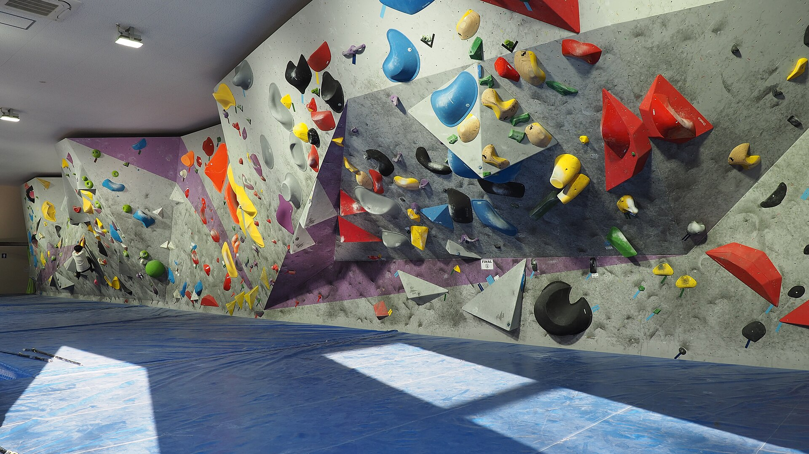
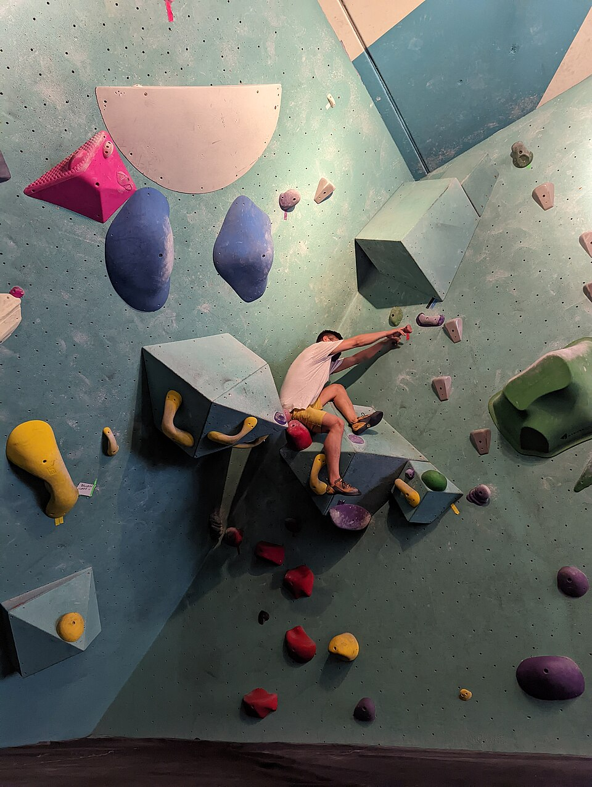

Salle d'escalade associative
Grimper à Grenoble, toute l'année
Le Club Les Dalles est une salle associative. On y grimpe en bloc ou en voie, seul, à deux ou en cours encadré, sur des créneaux réservés à l'avance.
Réserver un créneau
Activités
Trois façons de grimper
Bloc
Des passages courts, sans corde, au-dessus de tapis épais.
Voie
Le grand mur, encordé, à deux : l'un grimpe, l'autre assure.
Cours encadrés
Un encadrant du club et un niveau annoncé : débutant ou confirmé.

Horaires
Ouvert tous les jours
- Du lundi au vendredi
- de 12 h à 22 h
- Samedi et dimanche
- de 10 h à 19 h
Les séances se réservent dans l'espace membre : trois réservations au plus par semaine, annulation possible jusqu'à deux heures avant le début.
Adhésion
Une adhésion pour l'année
- Adulte
- 240 € par an
- Moins de 18 ans
- 160 € par an
Venir et écrire
8 rue des Arts, à Grenoble
- Adresse
- 8 rue des Arts, Grenoble
- Téléphone
- 04 00 00 00 33
- Courriel
- contact@lesdalles.example